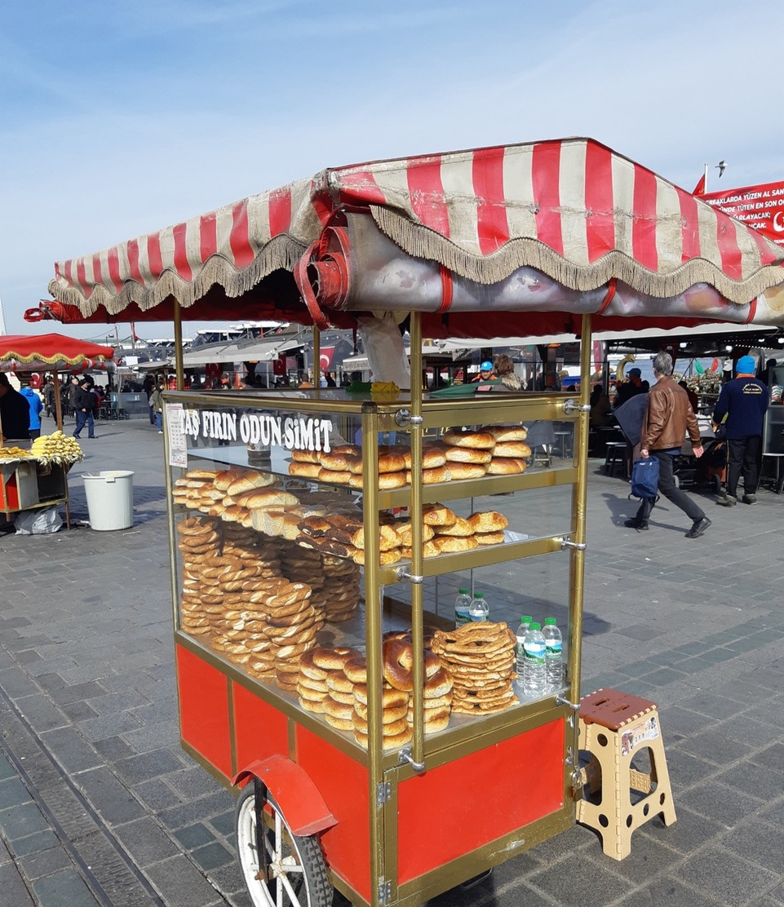
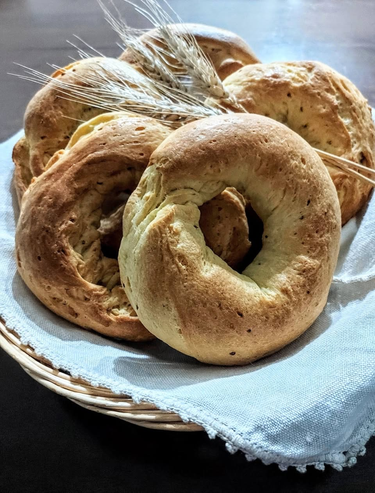

On a clear winter morning, I was waiting at the Üsküdar ferry dock to cross to the European side of Istanbul when I felt the urge to buy a simit from one of the street vendors who are part of the city’s everyday life. A simit is a ring-shaped bread coated in sesame seeds, its dough twisted into strands, briefly dipped in boiling water, then baked until golden.
It is traditionally eaten with black tea, sheep’s cheese, and olives, and can be enjoyed at any time of day.
Perhaps it was the crisp air, or the uphill walk to the Çinili Mosque—intimate and luminous inside, like dawn itself with its delicate Ïznik tiles—but more than anything it was the irresistible mosaic of flavors at every street corner that had made me hungry.

Seated in the sun on the ferry deck, I bit into the crisp crust, cracked along its twisted seam. Sesame seeds and crumbs from the soft interior fell at my feet, drawing the attention of the seagulls trailing in the ferry’s wake toward Eminönü. From both shores, the muezzins began their call to prayer seconds apart, their voices overlapping across the water in a shifting, echoing chorus.
It was not the simit’s toasted flavor but its shape that carried me, through the mists of my Umbrian upbringing, back to a small ring-shaped cheese bread—the torchietto.
In the Tiber Valley, local bakeries baked these breads on January 17, and for that reason they were known as torchietti di Sant’Antonio. Parish priests would bless them together with the animals—oxen, donkeys, sheep, and pigs, all under the saint’s protection—in those days, when Umbria was still deeply rooted in a rural way of life. The bread was then taken home and shared with the animals, often mixed into their feed, as a token of protection and well-being.

The torchietti reappeared at Easter, when every household prepared its own cheese bread. Some bakeries produced them year-round. Like simit, they were among the cheapest things one could buy. If you were hungry, you could always afford a torchietto. At times they were still warm, and small cubes of pecorino surfaced on their slightly flattened, browned crust.
As a child, I had a strong dislike for cheese. I couldn’t even stand its smell. In our house there was a room—fortunately somewhat out of the way—where wheels of pecorino from the farm were left to age on suspended shelves. Just approaching it made me gag. Before lunch, I would go into the kitchen to make sure Augusta, the cook, had set aside a plate of pasta without grated cheese. My parents, however, would hear none of it. Those were not days when one could claim vague food intolerances. Whenever my mother caught me doing something unpleasant—like picking my nose—she would force a small piece of Parmesan into my mouth. My father once promised me a two-volume encyclopedia, bound in red with green cloth spines, if I managed to eat an entire mozzarella.

Everything passes, and this aversion eventually did too, turning into its exact opposite. After all, I now live between two countries renowned for their rich and varied cheese traditions. But as a child, I carefully removed every piece of pecorino before eating my torchietto. Handmade, they were all slightly irregular in shape. Some had openings large enough for a child’s hand to slip through. When Rodolfo, the household servant, returned with the blessed torchietti in large brown paper sacks and distributed them with solemnity, we would sometimes slip them onto our wrists in play before eating them. He would immediately adopt an expression of affected disapproval. For him, religious practices were a social necessity, upheld above all by the prevailing matriarchal order, but whose excesses he privately mocked.